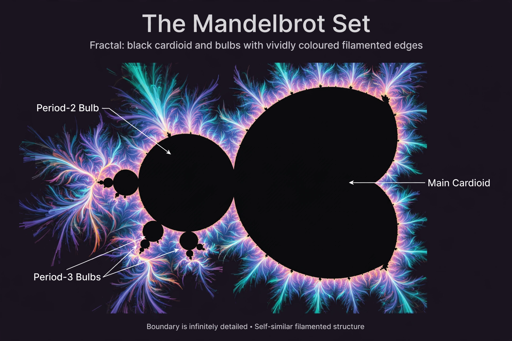

Mandelbrot set

[Image: The Mandelbrot set: a black cardioid-and-bulb shape with a colourful filamented boundary]
The Mandelbrot set is a set of complex numbers whose picture — a bulbous, seahorse-shaped fractal with infinitely detailed frilled edges — has become the emblem of chaos theory and fractal geometry. A point c belongs to the set if the iteration z → z² + c, started at 0, stays bounded forever.
Benoit Mandelbrot produced the first recognisable computer images around 1978–1980 at IBM, building on mathematical work by Pierre Fatou and Gaston Julia from 1918. Zooming into the boundary reveals endless near-copies of the whole set, decorated with spirals and filaments, at every scale.
Significance
The Mandelbrot set connects disparate areas: it encodes the behaviour of all quadratic polynomials, its boundary has Hausdorff dimension 2 (as complex as a curve can be), and it remains unproved whether the set is locally connected — a famous conjecture (MLC) driving current research.
Its images, colourised by escape time, were many people's first encounter with computer-generated mathematical art.